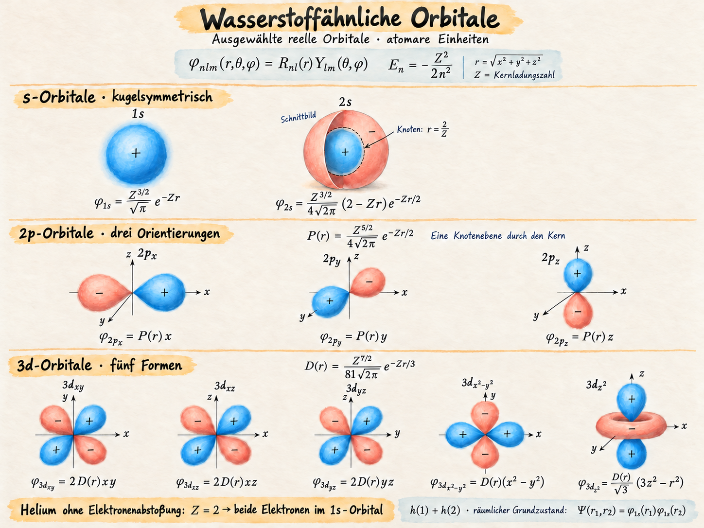
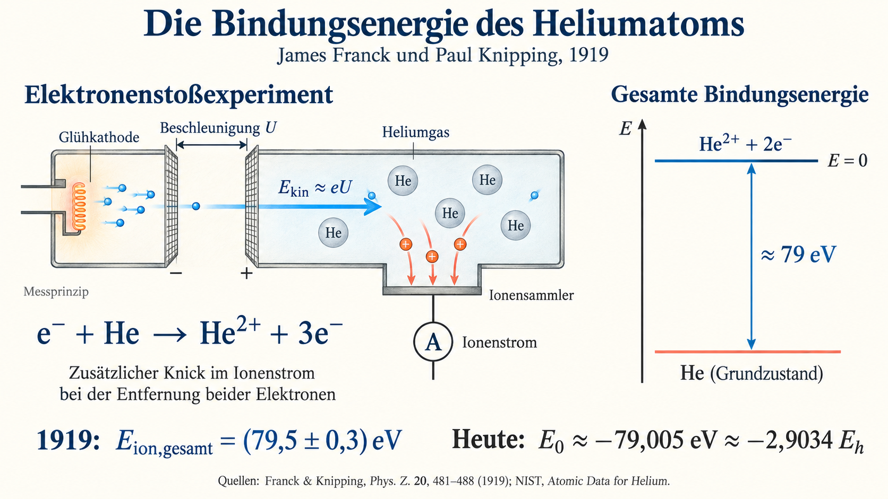
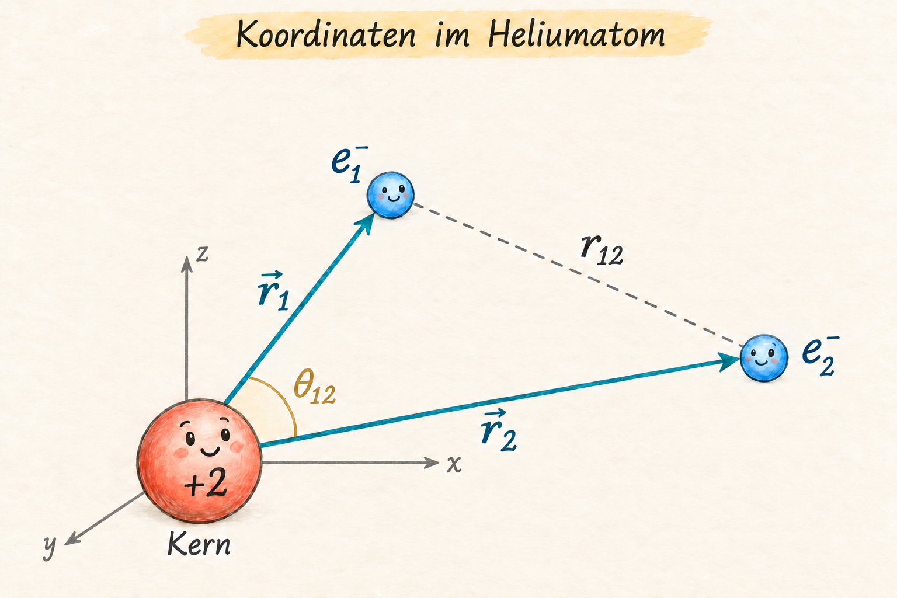
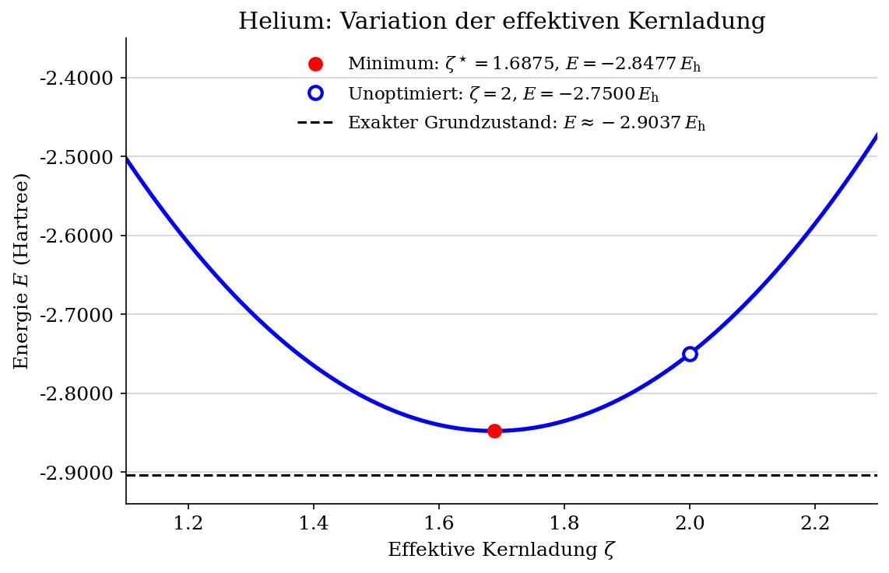

Das Helium-Atom#
Nachdem wir das Variationsprinzip als Werkzeug zur näherungsweisen Lösung quantenmechanischer Probleme kennengelernt haben, wenden wir uns nun dem Heliumatom zu. Obwohl es nur zwei Elektronen besitzt, ist es aufgrund der gegenseitigen Elektronenabstoßung deutlich schwieriger zu behandeln als das Wasserstoffatom. Bereits an diesem einfachen Beispiel begegnen uns zentrale Herausforderungen der Quantenchemie.
Das Heliumatom eignet sich besonders gut, um grundlegende Konzepte und Näherungsverfahren zu entwickeln, da sich viele Rechenschritte noch „von Hand“ nachvollziehen lassen. Die dabei gewonnenen Einsichten und Ansätze werden wir anschließend auf größere Mehrelektronenatome und molekulare Systeme übertragen und verallgemeinern.
Der atomare Hamiltonoperator#
Das Heliumatom besteht aus einem Kern mit Ladungszahl \(Z = 2\) und zwei Elektronen.
Im nichtrelativistischen Fall lautet der Hamiltonoperator in Atomaren Einheiten
(a.u., also \(\hbar = m_e = e = 4\pi\varepsilon_0 = 1\)):
Die exakte Lösung der Schrödingergleichung ist in diesem Fall nicht möglich, weil der Term \(1/r_{12}\) die beiden Elektronen koppelt.
Als Ausgangspunkt für unsere Behandlung des He-Atoms lassen wir im ersten Schritt die Elektron–Elektron-Abstoßung vollständig weg und erhalten damit den folgenden vereinfachten Hamiltonian:
In diesem Hamiltonian sind beide Elektronen vollständig entkoppelt, und der Operator kann als Summe zweier Terme geschrieben werden, die jeweils nur von den Koordinaten des einen oder des anderen Elektrons abhängen.
Solche Terme bezeichnet man in der Quantenchemie als Ein-Elektron-Terme. Es gilt also
mit dem bekannten wasserstoffähnlichen Hamiltonian
Die Eigenfunktionen und Eigenwerte dieses Ein-Elektron-Hamiltonoperators kennen wir bereits vom Wasserstoffatom. Die folgende Übersicht zeigt ausgewählte wasserstoffähnliche Orbitale und ihre normierten analytischen Ausdrücke für eine beliebige Kernladungszahl \(Z\):

Alle Ausdrücke gelten in atomaren Einheiten; \(E_n=-Z^2/(2n^2)\) ist in Hartree angegeben. Die reellen p- und d-Orbitale lassen sich aus den Kugelflächenfunktionen \(Y_{lm}\) bilden. Für den räumlichen Grundzustand unseres vereinfachten Heliumatoms besetzen beide Elektronen das 1s-Orbital mit \(Z=2\).
Lässt man auch bei einem allgemeinen N-Elektronen-Atom die Elektron–Elektron-Wechselwirkung fort, so ergibt sich der ungekoppelte Hamiltonoperator zu
wobei jeder Summand \(h(i)\) den Ein-Elektron-Hamiltonian für das \(i\)-te Elektron beschreibt:
Separationsansatz (Hartree-Produkt)#
Um den Grundzustand des Heliumatoms näherungsweise zu beschreiben, wählen wir für die räumliche Wellenfunktion einen Produktansatz, den man auch als Hartree-Produkt bezeichnet:
Dabei ist \(\phi\) ein normiertes, 1s-ähnliches Atomorbital mit Zentrum am Kern. Beide Elektronen werden somit durch dasselbe räumliche Orbital beschrieben. Ist \(\phi\) normiert, so ist auch das Hartree-Produkt normiert. Wir ignorieren momentan die Tatsache, dass Elektronen auch einen Spin besitzen. Das Ergebniss das wir erhalten bleibt in diesem Fall auch dann korrekt, wenn wir den Spin später berücksichtigen.
Bemerkung: Warum verwenden wir ein Produkt und nicht einfach eine Summe der Form
Da das Orbital im Unendlichen verschwindet, gilt für diese Summe
Die Wellenfunktion verschwindet also im Allgemeinen nicht, wenn sich eines der Elektronen beliebig weit vom Kern entfernt. Außerdem ist sie über den gesamten Zweielektronenraum nicht normierbar. Diese einfache Summe zweier Einteilchenorbitale ist daher kein geeigneter Ansatz. Summen von Hartree-Produkten können dagegen durchaus sinnvolle Zweielektronenwellenfunktionen ergeben.
Um den Produktansatz zu motivieren, betrachten wir zunächst ein vereinfachtes Modell, in dem wir die gegenseitige Abstoßung der Elektronen vernachlässigen. In atomaren Einheiten lautet der Hamiltonoperator dann
wobei für Helium \(Z=2\) gilt. Jeder Einteilchenoperator wirkt nur auf die Koordinaten des zugehörigen Elektrons. Deshalb erhalten wir
Wählen wir \(\phi\) als Eigenfunktion des Einteilchenoperators,
so ergibt jeder der beiden Terme den Beitrag \(\varepsilon\Psi\). Damit folgt unmittelbar
Die Gesamtenergie ist also die Summe der beiden Einteilchenenergien.
Wählen wir für \(\phi\) das exakte wasserstoffähnliche 1s-Orbital zur Kernladungszahl \(Z\), so ist das Hartree-Produkt die exakte räumliche Grundzustandswellenfunktion des vereinfachten Hamiltonoperators \(H_0\). Dies liefert eine natürliche Motivation für den Produktansatz. Wir sehen also, dass wir mithilfe des Produktansatzes ein Zweielektronenproblem in zwei Einteilchenprobleme zerlegen können. Dies ist die generelle Idee die wir immer wieder anwenden werden.
Beim tatsächlichen Heliumatom kommt die Elektronenabstoßung \(1/r_{12}\) hinzu. Für dieses wechselwirkende System ist das Hartree-Produkt im Allgemeinen keine exakte Lösung mehr, kann aber als Ansatz im Variationsverfahren verwendet werden.
Energie des Heliumatoms ohne Elektron–Elektron-Abstoßung#
Für den 1s-Grundzustand gilt
und somit ergibt sich für das Gesamtsystem ohne Elektron–Elektron-Abstoßung
Für das Heliumatom (\(Z = 2\)) folgt daher für die Gesamtennergie \(E = -4\) Hartree. Der exakte nichtrelativistische Wert bei festgehaltenem Kern aus hochpräzisen numerischen Rechnungen beträgt
und aus der Summe der beiden experimentell bestimmten Ionisationsenergien ergibt sich für den Heliumgrundzustand eine Gesamtenergie von etwa
Die Differenz von rund 1.1 Hartree zeigt deutlich, dass die einfache Näherung ohne Elektron–Elektron-Abstoßung das System zu stark bindet.
Sie verdeutlicht damit den erheblichen Beitrag der Elektron–Elektron-Wechselwirkung zur realen Bindungsenergie des Heliumatoms! Wir lernen daraus, dass die Elektron-Elektron Wechselwirkung definitiv keine vernachlässigbare Größe ist und die orbitalbasierte Produktansätze, die für nichtwechselwirkende Elektronen exakt sind, keine gute Näherungen für die exakte Wellenfunktion eines realen wechselwirkenden Systems sind!
Wissenswerte Ergänzung: Experimenteller Zugang zur Gesamtbindungsenergie#
Wie lässt sich diese Bindungsenergie experimentell bestimmen? Einen frühen Zugang untersuchten deutsche Physiker James Franck und Paul Knipping im Jahr 1919.
Sie beschleunigten Elektronen durch eine veränderliche Spannung \(U\) und ließen sie mit Heliumatomen zusammenstoßen. Die kinetische Energie der einfallenden Elektronen beträgt näherungsweise \(E_{\mathrm{kin}}=eU\). Gemessen wurde der Kollektorstrom als Funktion der Beschleunigungsspannung.

Illustration des Messprinzips. Die Apparatur ist schematisch dargestellt.
Bereits unterhalb der Schwelle zur Entfernung beider Elektronen entsteht durch einfache Ionisation ein Strom. Franck und Knipping beobachteten eine schwache zusätzliche Änderung des Stromverlaufs, die sie der direkten Doppelionisation zuordneten. Sie bestimmten dafür eine Schwellenenergie von \((79{,}5\pm0{,}3)\,\mathrm{eV}\).
Für den heutigen Vergleich verwenden wir die erste und die zweite Ionisationsenergie, \(I_1\approx24{,}5874\,\mathrm{eV}\) und \(I_2\approx54{,}4178\,\mathrm{eV}\). Wählen wir den vollständig getrennten Zustand \(\mathrm{He}^{2+}+2e^-\) als Energienullpunkt, so gilt
Die positive Gesamtbindungsenergie ist also der Energieaufwand zur vollständigen Ionisation; die Energie des gebundenen Grundzustands hat das entgegengesetzte Vorzeichen.
Quellen: J. Franck und P. Knipping, „Die Ionisierungsspannungen des Heliums“, Physikalische Zeitschrift 20, 481–488 (1919), insbesondere S. 487–488; NIST: Atomic Data for Helium.
Erste Verbesserung: Energieerwartungswert des Hartree-Produktansatzes#
Wir berechnen als Nächstes den Erwartungswert des vollen Hamiltonoperators für das Heliumatom unter Verwendung des Hartree-Produktansatzes. Das heißt, wir berechnen die Energie mit Hilfe einer genäherten Wellenfunktion, verwenden dafür aber nun den vollständigen Hamiltonoperator inklusive der Elektron–Elektron-Wechselwirkung.
Für eine gegebene (nicht notwendigerweise exakte) Wellenfunktion \(\Psi\) ist der Energieerwartungswert definiert als
Für das Heliumatom lautet der volle Hamiltonoperator
Setzen wir nun den Hartree-Produktansatz
ein, so ergibt sich für den Energieerwartungswert
Da \(h(1)\) und \(h(2)\) auf verschiedene Koordinaten wirken, kann der Ausdruck in einen Einteilchenanteil und einen Wechselwirkungsanteil zerlegt werden:
wobei das Coulomb-Integral
den mittleren Beitrag der Elektron–Elektron-Abstoßung beschreibt.
Damit ergibt sich der Energieerwartungswert zu
Erst durch die Berücksichtigung dieses Coulomb-Integrals \(J\) liefert das Variationsprinzip eine realistische Näherung für die Gesamtenergie des Heliumatoms.
Wie groß ist die Elektron–Elektron-Wechselwirkung? Eine erste Abschätzung.#
Nachdem wir die Grundenergie des Heliumatoms ohne Elektron–Elektron-Abstoßung berechnet haben, wollen wir nun abschätzen, wie groß der Beitrag des Coulomb-Integrals \(J\) tatsächlich ist.
Wir berechnen dazu den Erwartungswert des Terms \(\tfrac{1}{r_{12}}\) mit derselben Produktwellenfunktion
Für das normierte Orbital gilt
Das Coulomb-Integral lautet definitionsgemäß

Die Ortsvektoren \(\mathbf r_1\) und \(\mathbf r_2\) haben ihren Ursprung am Kern. \(r_{12}\) bezeichnet den Elektronenabstand und \(\theta_{12}\) den Winkel zwischen den Ortsvektoren.
Da es sich um ein Produkt zweier s-Orbitale handelt, ist es vorteilhaft, statt der sechs kartesischen Koordinaten \((\mathbf r_1,\mathbf r_2)\) auf Abstandskoordinaten zu wechseln:
\(r_1 = |\mathbf r_1|\), \(r_2 = |\mathbf r_2|\) und \(r_{12} = |\mathbf r_1 - \mathbf r_2|\).
Dazu führen wir zunächst Kugelkoordinaten mit dem Ursprung am Kern ein. Für das erste Elektron gilt
Die Jacobi-Determinante dieser Transformation liefert den Faktor
sodass das Volumenelement lautet
Für eine festgehaltene Position des ersten Elektrons wählen wir die Polarachse für das zweite Elektron entlang von \(\mathbf r_1\). Der Ursprung bleibt dabei am Kern. Diese Drehung der Achsen ändert das Volumenelement nicht. Der Polarwinkel ist nun der Winkel \(\theta_{12}\) zwischen den beiden Ortsvektoren; \(\varphi_{12}\) bezeichnet den Azimutwinkel um die gewählte Polarachse. Damit gilt
und für beide Elektronen zusammen
Zwischen den drei Abständen gilt der Kosinussatz
Der Integrand hängt somit nur von \(r_1\), \(r_2\) und \(\theta_{12}\) ab. Die Orientierung von \(\mathbf r_1\) und der Azimutwinkel \(\varphi_{12}\) können unabhängig integriert werden:
Nach diesen Winkelintegrationen verbleibt daher das Maß
Nun ersetzen wir \(\theta_{12}\) durch den Elektronenabstand \(r_{12}\). Bei festgehaltenen Radien folgt durch Differenzieren des Kosinussatzes
Die zugehörige Jacobi-Determinante für den Variablenwechsel ist im Inneren des Integrationsbereichs
Für die Integrationsgrenzen erhalten wir
woraus sich die Dreiecksgrenzen
ergeben. Nach der Winkelintegration und dem Variablenwechsel reduziert sich das Maß somit auf das Volumenelement
Der Pfeil erinnert daran, dass die drei Winkel für die räumliche Orientierung bereits integriert wurden.
Damit lautet das zu berechnende Integral:
Der Faktor \(r_{12}\) aus dem Volumenelement kürzt den Nenner des Coulomb-Terms. Die innere Integration ist deshalb besonders einfach:
Damit erhalten wir
Da der Integrand beim Vertauschen von \(r_1\) und \(r_2\) unverändert bleibt, können wir uns auf den Bereich \(r_1\ge r_2\) beschränken und das Ergebnis verdoppeln. In diesem Bereich gilt
Wir integrieren zuerst über \(r_1\) von \(r_2\) bis \(\infty\) und anschließend über \(r_2\):
Mit
folgt
Die verbleibenden Integrale lassen sich mit
auswerten. Mit \(N^4=Z^6/\pi^2\) ergibt sich schließlich
Zum Vergleich benötigen wir zusätzlich das Normintegral
Hier liefert die Integration über den Elektronenabstand
Damit zerfällt das Normintegral in zwei gleiche Radialintegrale:
Im folgenden Code verwenden wir die unnormierte Produktfunktion \(e^{-Z(r_1+r_2)}\). Deshalb teilen wir das berechnete Coulomb-Matrixelement durch das Normintegral. Die Normierungskonstante kürzt sich dabei heraus.
Beide Integrale können symbolisch mit SymPy ausgewertet werden.
Der folgende Code führt diese Berechnung exakt aus:
Zusatz: Symbolische Berechnung des Erwartungswertes#
Für interessierte Studierende lässt sich die Energie des Heliumatoms mit vereinfachten Hamiltonian (ohne Elektron–Elektron-Abstoßung) auch symbolisch mit sympy berechnen.
Wir wählen als Näherung für die räumliche Wellenfunktion das Produkt zweier exponentiell abfallender 1s-Funktionen
Da wir s-Zustände betrachten,können die Winkelintegrationen für beide Elektronen sofort durchgeführt werden:
Das Volumenelement separiert zu
und für zwei Elektronen ergibt sich nach Winkelintegration das radiale Maß
wobei die konstanten Faktoren \((4\pi)^2\) in der Energieratio herauskürzen und daher ohne Einfluss bleiben.
Der Laplace-Operator reduziert sich für sphärisch symmetrische Funktionen auf seine radiale Form
sodass der nichtrelativistische Hamiltonoperator
im Code direkt mit radialen Ableitungen implementiert werden kann.
Das folgende SymPy-Skript führt dies aus, integriert über beide Elektronenradien analytisch und berechnet schließlich den Erwartungswert der Energie symbolisch:
import sympy as sp
from sympy import oo
r1, r2, Z = sp.symbols('r1 r2 Z', positive=True, real=True)
def laplacian_radial(psi, r):
return psi.diff(r, 2) + (2/r)*psi.diff(r)
def T(psi):
return -sp.S.Half * (laplacian_radial(psi, r1) + laplacian_radial(psi, r2))
def V_ne(psi):
return -(Z/r1 + Z/r2) * psi
def H0(psi):
return T(psi) + V_ne(psi)
psi0 = sp.exp(-Z*(r1 + r2))
def integrate_6d(f):
integrand = (4*sp.pi)**2 * r1**2 * r2**2 * f
I_r2 = sp.integrate(integrand, (r2, 0, sp.oo))
I_r1 = sp.integrate(I_r2, (r1, 0, sp.oo))
return sp.simplify(I_r1)
def energy(psi, H):
num = integrate_6d(psi * H(psi))
den = integrate_6d(psi * psi)
return sp.simplify(num/den)
E_Z = energy(psi0, H0)
E_Z
E_He = sp.simplify(E_Z.subs(Z, 2)) # Helium-Ergebnis
print(f"Energie = {E_He} Hartree")
Energie = -4 Hartree
import sympy as sp
r1, r2, r12, Z = sp.symbols('r1 r2 r12 Z', positive=True, real=True)
# Produktansatz der Wellenfunktion
psi0 = sp.exp(-Z*(r1 + r2))
# Winkelintegriertes Volumenelement in (r1, r2, r12)
dV = 8*sp.pi**2 * r1 * r2 * r12
# Normintegral S = <Psi|Psi>
S = sp.integrate(
dV * psi0**2,
(r12, sp.Abs(r1 - r2), r1 + r2),
(r2, 0, sp.oo),
(r1, 0, sp.oo)
)
# Erwartungswert <V_ee> = <Psi|1/r12|Psi>
Vee = sp.integrate(
dV * psi0**2 * (1/r12),
(r12, sp.Abs(r1 - r2), r1 + r2),
(r2, 0, sp.oo),
(r1, 0, sp.oo)
)
# Verhältnis <V_ee>/<Psi|Psi>
result = sp.simplify(Vee/S)
print(result)
5*Z/8
Die symbolische Berechnung ergibt schließlich
Für Helium (\(Z=2\)) beträgt das Coulomb-Integral also \(J = 1{.}25\) Hartree. Addiert man diesen Beitrag zur Energie zweier unabhängiger Elektronen (\(E_0 = -4\) Hartree), erhält man für die Gesamtenergie
was bereits eine vernünftige Näherung des exakten Grundzustandswerts
\(E_\text{exakt} = -2{.}9037\) Hartree darstellt. Damit wird deutlich, dass die Elektron–Elektron-Wechselwirkung einen Beitrag von etwa 1 Hartree, also rund einem Drittel der gesamten Bindungsenergie des Heliumatoms, liefert.
Zweite Verbesserung des Ansatzes: Optimierung der effektiven Kernladung#
Wie wir gerade gesehen haben, lässt sich die Energie als eine Funktion der Kernladung \(Z\) wie folgt ausdrücken:
Dies legt nahe, die feste Kernladung \(Z\) durch einen variationellen Exponenten \(\zeta\) zu ersetzen, während der wahre Kernterm im Hamiltonoperator \(-\tfrac{Z}{r}\) unverändert bleibt. Damit erhalten wir einen Energieausdruck
den wir nun im Bezug auf die effektive Kernladung \(\zeta\) optimieren können.
Die Optimierung der effektiven Kernladung folgt aus der Bedingung
Damit ergibt sich für die optimierte Energie
Für Helium (\(Z = 2\)) erhält man
eine deutliche Verbesserung gegenüber dem unoptimierten Wert \(E(Z) = -2.75\ \text{Hartree}\). Vergleicht man diesen Wert mit der exakten Grundzustandsenergie \(E_\text{exakt} = -2.9037\ \text{Hartree}\), so beträgt der verbleibende Fehler nur etwa 0.056 Hartree, also weniger als 2 %. Die folgende Abbildung zeigt die Energie als Funktion der effektiven Kernladung \(\zeta\) bei festem \(Z=2\). Die gestrichelte Linie markiert die exakte Grundzustandsenergie.
import numpy as np
import matplotlib.pyplot as plt
plt.rcParams.update({"font.family": "DejaVu Serif", "font.size": 12,
"mathtext.fontset": "dejavuserif", "figure.dpi": 150})
Z_He = 2
def E(zeta):
return zeta**2 - 2*Z_He*zeta + 5*zeta/8
zeta = np.linspace(1.1, 2.3, 300)
zeta_opt = Z_He - 5/16
E_exakt = -2.9037
fig, ax = plt.subplots(figsize=(7.5, 4.8), layout="constrained")
ax.plot(zeta, E(zeta), color="blue", lw=2.5)
ax.plot(zeta_opt, E(zeta_opt), "o", color="red", ms=8,
label=fr"Minimum: $\zeta^\star={zeta_opt:.4f}$, $E={E(zeta_opt):.4f}\,E_\mathrm{{h}}$")
ax.plot(Z_He, E(Z_He), "o", color="blue", mfc="white", ms=8, mew=2,
label=fr"Unoptimiert: $\zeta={Z_He}$, $E={E(Z_He):.4f}\,E_\mathrm{{h}}$")
ax.axhline(E_exakt, color="black", ls="--", lw=1.5,
label=fr"Exakter Grundzustand: $E\approx{E_exakt:.4f}\,E_\mathrm{{h}}$")
ax.set(xlabel=r"Effektive Kernladung $\zeta$", ylabel=r"Energie $E$ (Hartree)",
title="Helium: Variation der effektiven Kernladung",
xlim=(zeta[0], zeta[-1]), ylim=(-2.94, -2.35))
ax.spines[["top", "right"]].set_visible(False)
ax.grid(axis="y", color="lightgray", lw=0.8)
ax.set_axisbelow(True)
ax.legend(loc="upper center", frameon=False, fontsize=11)
from matplotlib.ticker import FormatStrFormatter
ax.yaxis.set_major_formatter(FormatStrFormatter("%.4f"))
plt.show()

Nun kann man sich die Frage Stellen ob man die Genauigkeit des Produktansatzes noch weiter treiben kann?